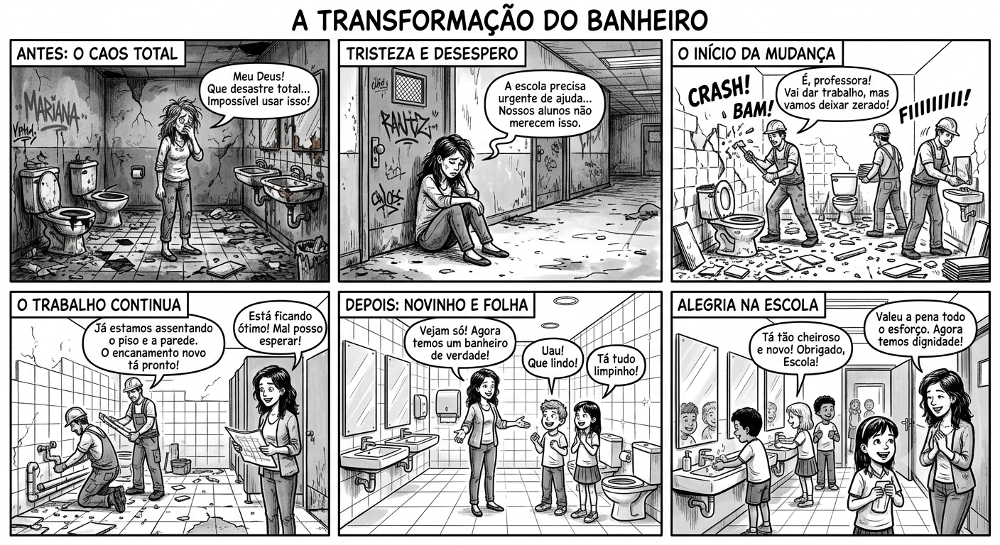
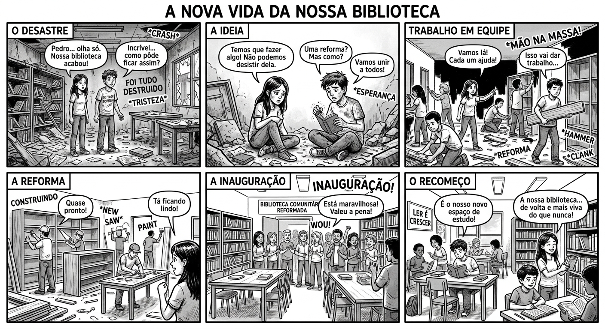

UM AMBIENTE LIMPO, ORGANIZADO E ACOLHEDOR DIMINUI O ESTRESSE DE TODOS E AUMENTA A MOTIVAÇÃO PARA APRENDER E CONVIVER.
CUIDAR DAS MESAS, DAS SALAS E DAS ÁREAS COMUNS É UMA DEMONSTRAÇÃO PRÁTICA DE RESPEITO PELO PRÓXIMO E PELO TRABALHO DE QUEM MANTÉM A ESCOLA FUNCIONAL.

ESSA REFLEXÃO RESUME PERFEITAMENTE A ESSÊNCIA DE UMA COMUNIDADE SAUDÁVEL. QUANDO ENTENDEMOS QUE A NOSSA EVOLUÇÃO DEPENDE TAMBÉM DO BEM-ESTAR DE QUEM ESTÁ AO NOSSO REDOR, O AMBIENTE ESCOLAR SE TRANSFORMA POR COMPLETO.

COLOCAR ESSA IDEIA EM PRÁTICA DIARIAMENTE É O QUE TRANSFORMA O ESPAÇO ESCOLAR EM UM AMBIENTE INSPIRADOR E PREPARA CADA ESTUDANTE PARA SER UM CIDADÃO MAIS CONSCIENTE NO FUTURO.

